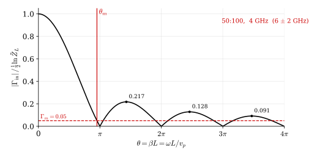

6 Tapered Transmission Lines
6.1 Tapered Transmission Line Impedance Matching
Width and \(Z\) are related — by continuously varying the width of the line, the characteristic impedance \(Z(x)\) transitions from \(Z_0\) to \(Z_L\).
This is the continuous limit of multisection matching: as \(\Delta\ell \to 0\) and \(N \to \infty\), the staircase approximation becomes a smooth taper.
The smooth taper (tapered line) has total length \(L\), with \(Z = f(\ell)\) varying continuously along the line.
Notation:
- \(x\): position along the line
- \(Z(x)\): characteristic impedance at position \(x\)
- \(Z(x=0) = Z_0\), \(Z(x=L) = Z_L\), \(L\): total length
- \(Z(x+dx) = Z(x) + dZ\)
The incremental reflection coefficient at position \(x\):
\[\Gamma = \frac{Z(x+dx) - Z(x)}{Z(x+dx) + Z(x)} = \frac{Z(x) + dZ - Z(x)}{Z(x) + dZ + Z(x)} = \frac{dZ}{2Z(x) + dZ}\]
For small \(dZ\):
\[d\Gamma = \frac{dZ}{2Z(x)}\]
6.2 Normalized Impedance
Define the normalized impedance:
\[\tilde{Z} \triangleq \frac{Z}{Z_0}, \qquad \tilde{Z}(x) = \frac{Z(x)}{Z_0}, \qquad \tilde{Z}_L = \frac{Z_L}{Z_0}, \qquad \tilde{Z}_0 = 1, \qquad d\tilde{Z} = \frac{dZ}{Z_0}\]
The incremental reflection coefficient becomes:
\[\Gamma(x) = d\Gamma = \frac{dZ}{2Z + dZ} \approx \frac{1}{2}\,\frac{dZ}{Z} = \frac{1}{2}\,\frac{d\tilde{Z}}{\tilde{Z}}\]
\[d\Gamma = \frac{1}{2}\,\frac{d\tilde{Z}}{\tilde{Z}} = \frac{1}{2}\!\left(\frac{d}{dx}\ln\tilde{Z}\right)\! dx\]
6.3 Total Input Reflection
\(d\Gamma_{in}\) is the effect of \(d\Gamma(x)\) at the input (traveling back from \(x\) to \(0\)):
\[d\Gamma_{in} = d\Gamma \cdot e^{-j2\beta x}\]
Summing all incremental reflections along the line:
\[\Gamma_{in} = \sum_{k=1}^{\infty} d\Gamma_{in} = \int_{x=0}^{L} d\Gamma_{in} = \int_{x=0}^{L} d\Gamma \cdot e^{-j2\beta x} dx\]
\[\Gamma_{in} \simeq \int_{x=0}^{L} \frac{1}{2}\, e^{-j2\beta x}\!\left(\frac{d}{dx}\ln\tilde{Z}\right)\! dx \tag{6.1}\]
6.4 Special Design: Exponential Taper
For the exponential taper, the normalized impedance varies exponentially with position:
\[\tilde{Z}(x) = e^{K x}, \qquad K: \text{ design parameter}\]
At \(x = L\): \(\tilde{Z}(L) = \tilde{Z}_L\), giving:
\[e^{KL} = \tilde{Z}_L \quad \Rightarrow \quad K = \frac{1}{L}\ln\tilde{Z}_L\]
6.5 Frequency Response of the Exponential Taper
With \(\tilde{Z}(x) = e^{Kx}\) and \(K = \frac{1}{L}\ln\tilde{Z}_L\):
\[\frac{d}{dx}\ln\tilde{Z}(x) = K = \frac{1}{L}\ln\tilde{Z}_L\]
Substituting into Equation 6.1:
\[\Gamma_{in} \simeq \int_{0}^{L} \frac{1}{2}\, e^{-j2\beta x}\!\left(\frac{1}{L}\ln\tilde{Z}_L\right) dx = \frac{\ln\tilde{Z}_L}{2L}\int_{0}^{L} e^{-j2\beta x}\, dx\]
Evaluating the integral yields a sinc-shaped response:
\[\Gamma_{in} \simeq \frac{1}{2}\ln\tilde{Z}_L \cdot \frac{\sin\beta L}{\beta L}\, e^{-j\beta L}\]
\[|\Gamma_{in}| = \frac{1}{2}\ln\tilde{Z}_L \,\left|\frac{\sin(\omega L/v_p)}{\omega L/v_p}\right| \tag{6.2}\]

Choose a tolerable mismatch \(\Gamma_m\) (e.g. \(\Gamma_m = 0.05\) for a 50:100 \(\Omega\) match). The corresponding \(\theta_m\) is read from the response — pick the point on the right side of the main lobe so the passband extends upward in frequency. For a 4 GHz lower edge (6 ± 2 GHz band), \(\theta_m = \omega_m L/v_p\) fixes the required taper length \(L\).
The exponential taper is a high-pass matcher: below \(\theta_m\) the mismatch grows, above it \(|\Gamma_{in}|\) stays bounded by the sinc envelope.
6.6 Triangular Taper
Instead of a constant \(d(\ln\tilde{Z})/dx\), let the derivative ramp linearly up to \(x=L/2\) then back down to zero at \(x=L\):
\[\frac{d}{dx}\ln\tilde{Z}(x) = \begin{cases} \dfrac{4}{L^{2}}\,x\,\ln\tilde{Z}_L, & 0 \le x \le L/2 \\[6pt] \dfrac{4}{L^{2}}\,(L-x)\,\ln\tilde{Z}_L, & L/2 \le x \le L \end{cases}\]
Integrating gives a quadratic \(\ln\tilde{Z}(x)\):
\[\tilde{Z}(x) = \begin{cases} \exp\!\left(\dfrac{2x^{2}}{L^{2}}\ln\tilde{Z}_L\right), & x \in [0, L/2] \\[6pt] \exp\!\left[\left(1 - \dfrac{2(L-x)^{2}}{L^{2}}\right)\ln\tilde{Z}_L\right], & x \in [L/2, L] \end{cases}\]
Substituting into Equation 6.1 yields a squared-sinc response:
\[\Gamma_{in} = \frac{1}{2}\,e^{-j\beta L}\,(\ln\tilde{Z}_L)\!\left(\frac{\sin(\beta L/2)}{\beta L/2}\right)^{2} \tag{6.3}\]
The \((\sin x/x)^{2}\) envelope suppresses sidelobes much faster than the plain sinc of the exponential taper — at the cost of a wider main lobe (i.e. a longer line for the same cutoff).
6.7 Klopfenstein Taper
The Klopfenstein taper is the optimal profile: for a given maximum passband ripple \(\Gamma_m\) it gives the shortest \(L\), or for a given \(L\) it gives the smallest \(\Gamma_m\).
\[\ln\tilde{Z}(x) = \frac{1}{2}\ln\tilde{Z}_L + \frac{\Gamma_0}{\cosh A}\, A^{2}\, \phi\!\left(\frac{2x}{L}-1,\,A\right)\]
with
\[A = \operatorname{arccosh}\!\left(\frac{\Gamma_0}{\Gamma_m}\right), \qquad \Gamma_0 = \frac{1}{2}\ln\tilde{Z}_L\]
and
\[\phi(x, A) = \int_{0}^{x} \frac{I_{1}\!\left(A\sqrt{1-y^{2}}\right)}{A\sqrt{1-y^{2}}}\, dy\]
where \(I_{1}\) is the modified Bessel function of the first kind, order 1.
Its reflection magnitude is an equiripple Chebyshev response in the passband — analogous to how Chebyshev multisection matching improves on binomial (Butterworth) designs. The price is an impedance profile with step discontinuities at \(x=0\) and \(x=L\).